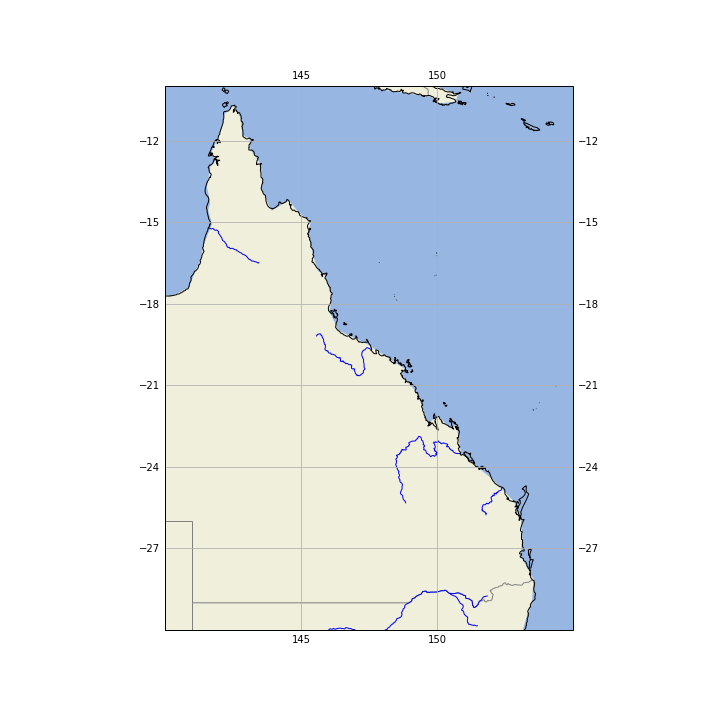
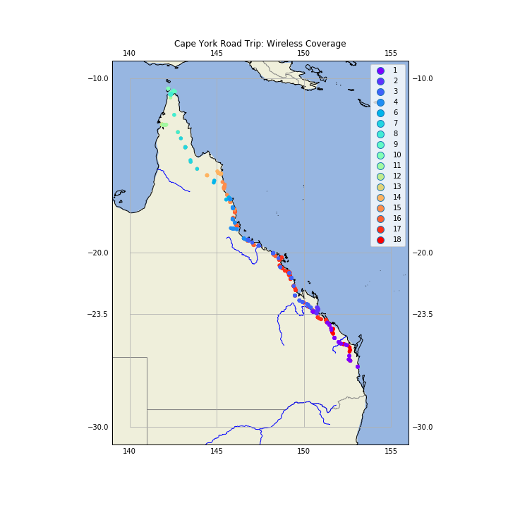
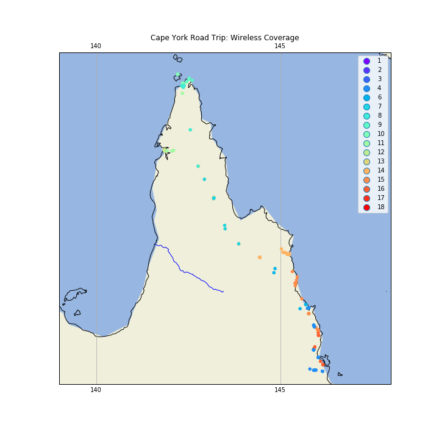
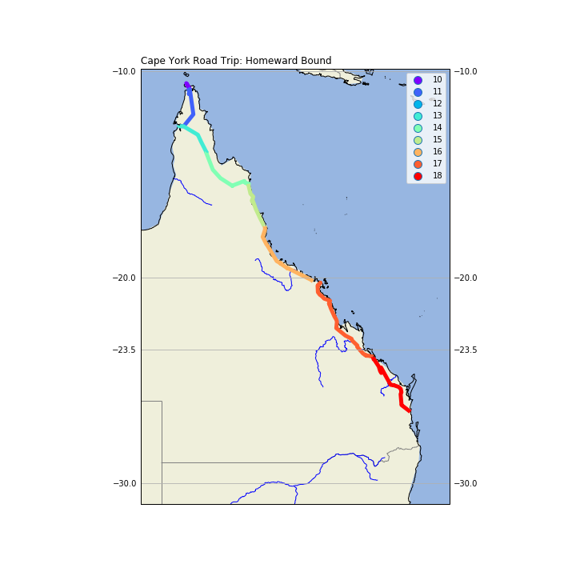

Wireless Coverage in North Queensland
Introduction
I recently did a road trip from south Queensland to the top of Queensland, all the way to the tip of Cape York, with side trips to Weipa and Thursday Island. One of the facts of life in travelling by road in Australia, is that you quickly run out of 4G / 3G wireless coverage.
I thought I would visualize what the coverage I got on the trip. Now, if I had been smart about this, I could have written a little Android app for my Android phone, that tested for 3G coverage, and logged the result, along with the GPS location every 10 minutes or so. However, I only thought of this little project once I got back.
However, Google to the rescue! Because I have basically given up on privacy (at least where Google is concerned), and because I carry an Android phone, Google has been tracking my location, and guessing what I doing, for years now. So, if I am at a location, and Google doesn't record it, it's probably because the Wireless coverage wasn't available.
One of the guesses Google makes is whether I am in a vehicle; good enough for me.
Processing Google's Location Data
Google allows you to retrieve the data it has been collecting about you (just google "google takeout"). You requests the data type (in this case, location data), and it will mail you a link to a Zip file holding the data.
Processing the data looks like the code below (one caveat: this was done in the context of a Jupyter Notebook,
so there are lots of incremental steps that could be collapsed. I also perform a copy() at each
processing stage as I have been annoyed by the "can't process a slice" error message,
and the datasets here are relatively small.)
First, load the data from the Google file, into a Pandas DataFrame.
loc_data =
'D:\\GoogleLocnData\\Takeout\\Location History\\Location History.json'
with open(loc_data, 'r') as fh:
raw = json.loads(fh.read())
#end with
ld = pd.DataFrame(raw['locations'])
Exclude all records that are missing data.
ld = ld[ld['activity'].notnull()].copy()
The Google ActivityType is a List, the first item of which is a Dict; the 'activity' key of this Dict gives you a List, the first item of which is a Dict, in which the key 'type' gives us Google's guess as to what we are doing. I only look at the first item in each record.
ld['ActivityType'] = [ x[0]['activity'][0]['type'] for x in ld['activity'] ]
Convert the high precision latitude and longitude integer values to floats.
ld['latitude'] = ld['latitudeE7']/float(1e7)
ld['longtitude'] = ld['longitudeE7']/float(1e7)
Convert millisecond timestamps to date-time values.
ld['timestampMsFl'] = ld['timestampMs'].astype(float)
ld['timestamp'] = ld['timestampMsFl']/1000.0
ld['datetime'] = ld['timestamp'].map(datetime.datetime.fromtimestamp)
Filter in just those records that cover the road trip.
ld = ld[ld['timestamp']>datetime.datetime(2018, 5, 31).timestamp()].copy()
ld = ld[ld['timestamp']<datetime.datetime(2018, 6, 19).timestamp()].copy()
Filter in just those records for travelling in a vehicle.
ld = ld[ld['ActivityType']=='IN_VEHICLE'].copy()
Create a DayNo column that records the days since the trip started.
ld['DayNo'] = [x.dayofyear for x in ld['datetime'] ]
ld['DayNo'] = ld['DayNo'] - 150
Conversion to GeoPandas
GeoDataFrame need a 'geometry' column, so create one from a Shapely call.
geometry = [Point(xy) for xy in zip(ld['longtitude'], ld['latitude'])]
Now we can create a GeoPandas dataframe; we have to specify the coordinate system we are using, which is Plate Carree (also called Equirectangular).
crs = {'init': 'epsg:4326'}
gld = gpd.GeoDataFrame(ld, crs=crs, geometry=geometry)
Background Map
Now, we need a nice looking Cartopy map.
fig = plt.figure(figsize=(10,10))
Set the map projection, and the area of the world we want displayed.
ax = plt.axes(projection=ccrs.PlateCarree())
ax.set_extent((140, 155, -30, -10))
Add the land and water fills.
ax.add_feature(cartopy.feature.LAND)
ax.add_feature(cartopy.feature.OCEAN)
Add state boundaries and rivers.
# Create a feature for States/Admin 1 regions at 1:10m from Natural Earth
states_provinces = cfeature.NaturalEarthFeature(
category='cultural',
name='admin_1_states_provinces_lines',
scale='10m',
facecolor='none')
rivers = cfeature.NaturalEarthFeature(
category='physical',
name='rivers_lake_centerlines',
scale='10m',
facecolor='none')
ax.add_feature(states_provinces, edgecolor='gray')
ax.add_feature(rivers, edgecolor='blue')
Add coastlines and gridlines.
ax.coastlines(resolution='10m',)
ax.gridlines(draw_labels=True, xlocs=[140, 145, 150, 155])
This gives us:

Plot the Road Trip
Now, plot the road trip, with a point for each location, where I was in a vehicle, color coded by day of trip.
gld.plot(ax=ax,
marker='o',
column='DayNo',
cmap='rainbow',
markersize=20,
zorder=5,
legend=True,
categorical=True,
)
ax.set_title(label='Cape York Road Trip: Wireless Coverage', loc='center', pad=20, )
As you can see, the coverage is quite good in South East Queensland, but gets very spotty once you get north. The Thursday Island markers record the bus tour of the island, and you can see the side trip to Weipa.

If we zoom into the Cape, we get:

Drawing Lines with GeoPandas
GeoPandas knows about geometry, so to draw a line show the road trip with GeoPanda, we can't just say 'draw a line between these points'. What we can do is convert the Shapely Points into LineString objects, that GeoPandas does know how to draw. We use the features of Pandas to group the Points for each day of the trip, and make a new GeoDataFrame with this new geometry. We create a 'DayNum' column so we can filter in only those days in the return trip.
# Aggregate each days points into a line
gld2 = gld.groupby(['DayNo'])['geometry'].apply(lambda x: LineString(x.tolist()))
gld2 = gpd.GeoDataFrame(gld2, geometry='geometry')
gld2['DayNum'] = gld2.index
gld2[gld2['DayNum']>9].plot(ax=ax,
column='DayNum',
cmap='rainbow',
legend=True,
categorical=True,
linewidth=5,
)
ax.set_title(label='Cape York Road Trip: Homeward Bound', loc='left')

Conclusion
For completeness, here are the imports for this Jupyter Notebook (not all are used in the code fragments above, as some as for producing output to support reproducability).
import pandas as pd
import sys
import os
import subprocess
import datetime
import platform
import datetime
import json
import geopandas as gpd
from shapely.geometry import Point, LineString
import matplotlib
import matplotlib.pyplot as plt
#import seaborn as sb
import cartopy
import cartopy.crs as ccrs
import cartopy.feature as cfeature